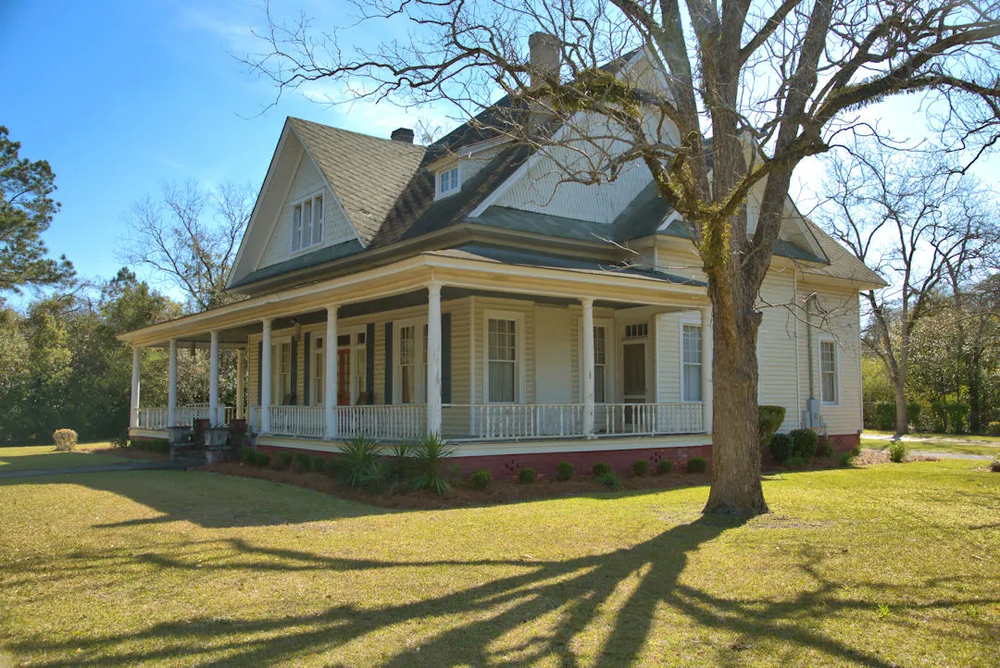

“I have lived in Eastman all my life, and I believe in this community. In the past, we elected all five City Council members citywide, making sure every citizen had a say in our leadership. Now, it’s time to take the next step by electing a mayor who is chosen by all Eastman voters. A citywide mayor will provide direction, unity, and strong leadership for our future. Please sign this petition and let’s make it happen together.”